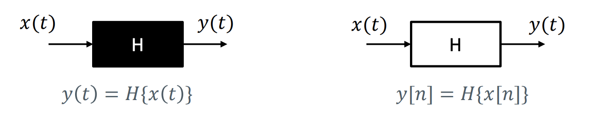
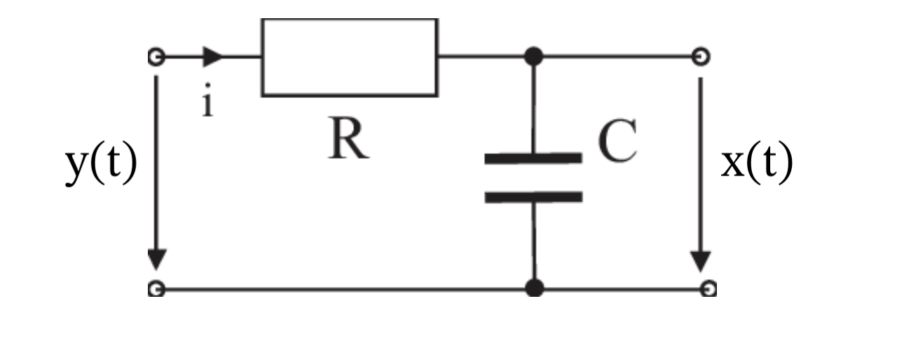
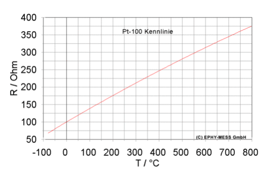
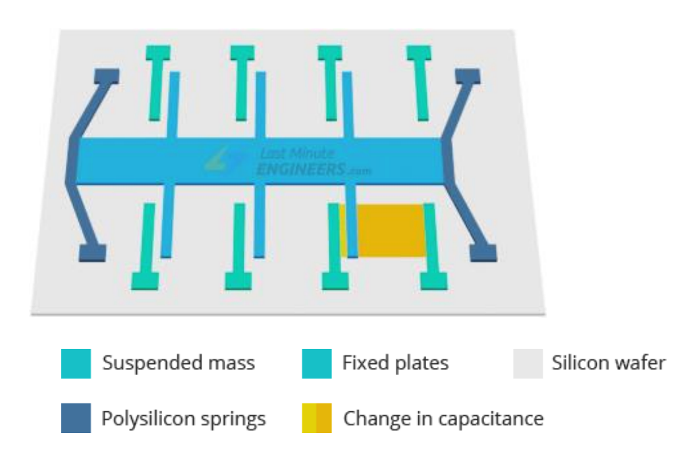
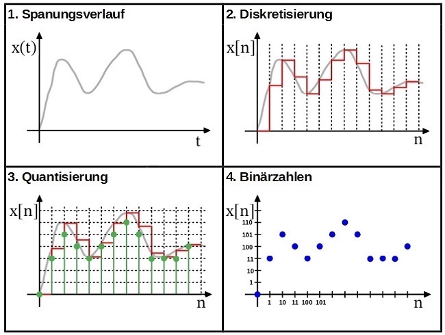
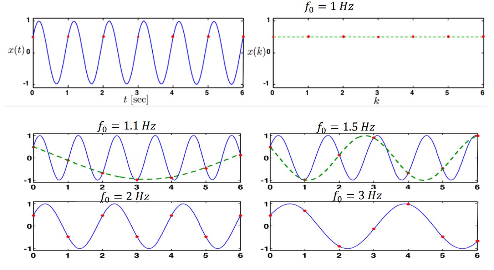

20. Systeme#
Ein System \(H\) verarbeitet ein oder mehrere Eingangssignale und liefert ein oder mehrere Ausgangssignale.
Eingangssignal(e): \(x_1(t)\), \(x_2(t)\), …
Ausgangssignal(e): \(y_1(t)\), \(y_2(t)\), …
Wenn der Ausgang \(y(t)\) von einem System \(H\) mathematisch beschrieben werden kann, wird es als White-Box, andernfalls als Black-Box bezeichnet. 
Bezeichnungen zu Ein- und Ausgängen:
SISO wenn: Single Input, Single Output
MIMO wenn: Multiple Input, Multiple Output
MISO
SIMO
Beispiel: RC-Glied (Tiefpass)

Ein RC-Glied, bestehend aus einem Widerstand und einem Kondensator, ist ein gängiger Schaltkreis in der Signalverarbeitung.
Das Verhalten kann mit folgender Differenzialgleichung beschrieben werden:
\( U_{RC}(t) = U_R(t)+U_C(t) \)
\( U_{RC}(t) = R*I(t)+U_C(t) \)
\( U_{RC}(t) = R*C*U_C'(t)+U_C(t) \)
Ein RC-Glied ist ein White-Box SISO-System mit Input \(x(t) = U_C(t)\) und Output \(y(t) = U_{RC}(t)\).
Schreibe die Gleichung um mit \( R*C \) als Konstante \(a\):
\( y(t) = a*x'(t) + x(t) \)
Der Ausgang \(y(t)\) hängt von dem Eingangssignal \(x(t)\) und dessen erste Ableitung \(x'(t)\) ab.
20.1. Lineare vs. nicht-lineare Systeme#
“Wenn das Eingangsignal verdoppelt wird, verdoppelt sich auch das Ausgangssignal”
Mathematisch: Gültigkeit der Superposition:
\(H\{x_1(t) + x_2(t)\} = H\{x_1(t)\} + H\{x_1(t)\}\) und
\(H\{c*x(t)\} = c*H\{x(t)\}\)
Beispiel: Ball mit einer bestimmten Kraft schießen und Distanz messen. Wenn der Ball mit doppelter Kraft auch doppelt so weit fliegt, ist das System linear.
Nicht-Linearität kann an Exponenten z.B. \(y(t)=x(t)^2\) und addierte Konstanten z.B. \(y(t)=x(t)+1\) in der Funktionsgleichung erkannt werden. Achtung: lineares System \(≠\) lineare Funktionsgleichung!
Beispiel: RC-Glied
Prüfung auf Linearität anhand der Funktionsgleichung von oben:\( y(t) = a*x'(t) + x(t) \)
Prüfe Bedingung \(H\{c*x(t)\} = c*H\{x(t)\} \). “Wenn das Eingangsignal ver-c-facht wird, ver-c-facht sich auch das Ausgangssignal.”
\( c*y(t) = a*\frac{\partial}{\partial t}(c * x(t)) + (c * x(t)) \)
\( c*y(t) = a*c*x'(t) + c*x(t) \) | Klammere \(c\) aus
\( c*y(t) = c * (a*x'(t) + x(t)) \) | Nutze Gleichung von oben \( y(t) = a*x'(t) + x(t) \)
\( c*y(t) = c * y(t) \)
Oder einfache nicht-mathematische Begründung: “In der Gleichung sind keine Exponenten oder addierte Konstanten enthalten.”
20.2. Zeitinvariant vs. zeitvariante Systeme#
Zeitinvariant sind Systeme, bei denen keine anderen zeitabhängigen Funktionen enthalten sind. Das Signal selbst darf von der Zeit abhängen, nur keine anderen Funktionen. Hängt eine weitere Funktion von \(t\) ab, ist das System zeitvariant.
Mathematisch: \(H{(t)} = y(t) ⟹ H{x(t-t_0)} = y(t-t_0)\)
Sind folgende Systeme zeitinvariant oder zeitvariante?
\(y(t) = 2x(t) + 1\)
Lösung:
Zeitinvariant, da nur das Signal \(x(t)\) und keine weiteren Funktionen von der Zeit abhängen.
\(y(t) = x(n) + sin(t)\)
Lösung:
Zeitvariant, da \(sin(t)\) verschiedene Werte bei zu unterschiedlichen Zeitpunkten \(t\) zurückgibt.
Beispiel: RC-Glied
\( y(t) = a*x'(t) + x(t) \)
Nur das Signal \(x(t)\) selbst ist von \(t\) abhängig. \(a\) bleibt konstant über die Zeit. Damit ist das RC-Glied in der Theorie zeitinvariant.
20.3. Dynamische vs. gedächtnislose Systeme#
Dynamisch ist ein System, wenn das Ausgangssignal auch von Signalen an anderen Zeitpunkten abhängig ist. Beispiel: \(y(t) = x(t-1)\). Andernfalls sind Systeme gedächtnislos. Beispiel: \(y(t) = x(t)\)
Sind folgende Systeme dynamisch oder gedächtnislos?
\(y(t) = 2x(t-1) + x(t)\)
Lösung:
Dynamisch, weil \(y(t)\) von vergangenem Signal \(x(t-1)\) abhängig ist..
\(y(t) = sin(t-1) * x(t)\)
Lösung:
Gedächtnislos, da \(sin(t-1)\) kein Eingangssignal, sondern eine andere Funktion (abhängig von \(t\)) ist. Das Eingangssignal \(x(t)\) wird nur zum aktuellen Zeitpunkt \(t\) betratet.
So wären auch Systeme mit \(sin(2*t)\), \(sin(t^2)\) usw. gedächtnislos.
\(y(t) = x(t) + 3x(t+1)\)
Lösung:
Dynamisch, weil \(y(t)\) abhängig von zukünftigem Signal \(x(t+1)\) ist.
20.4. Kausale vs. nicht kausale Systeme#
Kausal ist ein System, wenn der Ausgang \(y(t)\) nicht von der Zukunft, also nur vom aktuellen oder vergangenen Eingangssignalen abhängt. Beispiel: \(y(t) = x(t) + x(t-1)\). Andernfalls ist ein System nicht kausal. Beispiel: \(y(t) = x(t+1)\).
Mathematisch: \(y(t_0)\) hängt nur vom Eingangsignal \(x(t)\) für \(t ≤ t_0\) ab.
Frage: Warum sind gedächtnislose Systeme auch kausal?
Lösung:
Gedächtnislose Systeme dürfen nicht von der Zeit abhängen. Somit können sie auch nicht von zukünftigen Zeitpunkten abhängen.
20.5. Stabile vs. Instabil Systeme#
Stabil ist ein System, wenn ein beschränktes Eingangssignal zu einem beschränkten Ausgangssignal führt. Andernfalls ist es instabil.
Man spricht von einem BIBO-System: Bounded Input - Bounded Output
Mathematisch: \(|x(t)| ≤ M_x < ∞ → |y(t)| ≤ M_y < ∞ \) für alle Zeitpunkte \(t\).
In der Praxis: System erreicht irgendwann einen Ruhezustand. Beispiel: Pendel pendelt sich aus und bleibt irgendwann stehen.
Grenzstabil: Optimales stabiles Szenario, indem kein Ruhezustand erreicht wird z.B. ewiges Pendel ohne Luftwiderstand würde für immer weiter schwingen, ohne in einen Ruhezustand kommen.
20.6. LZI (linear zeitinvariante) Systeme#
Ein lineares und zeitinvariantes System, wird LZI-System genannt. Durch die Eigenschaften lässt sich mit LZI-Systemen deutlich einfacher rechnen. Obwohl in der Praxis alle Schaltkreise von Umweltfaktoren z.B. sich zeitlich ändernden Temperatur beeinflusst sind, werden in der Vorlesung alle Systeme als LZI-Systeme betrachtet.
21. Sensorik#
Ein Sensor wandelt gemessene physikalische Größe oder chemischen Effekt in analoges elektrisches Signal um.
Beispiele: PT-100-Sensor nutzt, dass Metalle ihren Widerstand bei Temperaturänderungen ändern. Beispiel: 
Micro Electro Mechanical Systems (MEMS) Beschleunigungssensoren arbeiten mit Kondensatoren, dessen Abstand durch die Beschleunigung größer und kleiner werden. 
21.1. Aktive und passive Sensoren#
Passiv: Erfassen die physikalische Größe direkt. Beispiele:
Mikrofon
Thermometer (durch Temperatur ändert sich der Widerstand des verwendeten Metalls)
Aktiv: Senden ein anderes Signal aus, um die physikalische Größe zu messen. Beispiele:
Farbsensoren mit LED messen Reflektionen z.B. einer weißen LED
Radar/Lidar: Senden Elektromagnetische Wellen aus und erkennen Objekte anhand der Reflektionen.
22. (Zeit-)diskrete Signale#
Messungen sind immer analog. Um das Signal digital zu verarbeiten, muss es durch einen Digitalwandler (A/D) diskretisiert werden.
Äquidistante (gleichmäßige) Abtastung mit Abtastintervall: \(T_s\) oder Abtastrate: \(f_s = \frac{1}{T_s}\)
\(u(t)\) → u[n]$: Funktion(Zeit) → Zahlenfolge(Zeitindex) 
Diskretisierung: Abtastung (Variablen-Diskretisierung z.B. \(t\) wird zu \(n\))
Quantisierung: Amplituden- bzw. Wert-Diskretisierung (diskreter Funktionswert/Signal)
Wichtig: Wähle Abtastrate und Amplitudenauflösung den Umständen entsprechen (z.B. 48000 Hz mit 24 Bit bei Audio; jede Stunde mit 16-Bit bei Temperatur mit Microcontroller)
22.1. Aliasing#
Wenn das gemessene Ereignis mit einer so hohen Frequenz auftritt, dass es nicht mit der aktuellen Abtastrate abgebildet werden kann, spricht man von aliasing.
Nyquist-Shannon-Abtasttheorem: Die Abtastrate \(f_s\) muss mindesten doppelt so groß wie die Maximalfrequenz des Eingangssignals sein, um es gut abbilden zu können:
\( f_s ≥ 2*f_{max} \)
 Die Welle mit \( 1 Hz \) kann erst bei einer Abtastrate von mindesten \(2Hz\) richtig abgebildet werden.
Methoden gegen Aliasing:
Abtastrate \(f_s\) erhöhen: Benötigt mehr Rechenleistung und Speicher
analoger Tiefpass vor dem Digitalwandler, der nur Frequenzen unter \(f_s/2\) durchlässt: Wird \(f_s\) zu gering gewählt, gehen wichtige Informationen verloren.
22.2. Bibliography#
John Guttag. Introduction to computation and programming using Python: With application to understanding data. MIT Press, 2016.
Christian Hill. Learning scientific programming with python. Cambridge University Press, 2016.